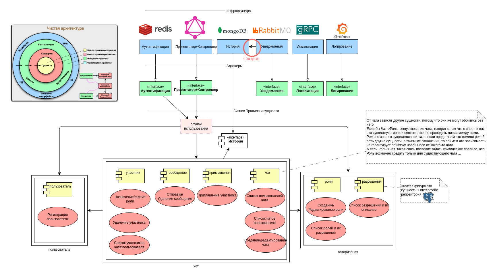
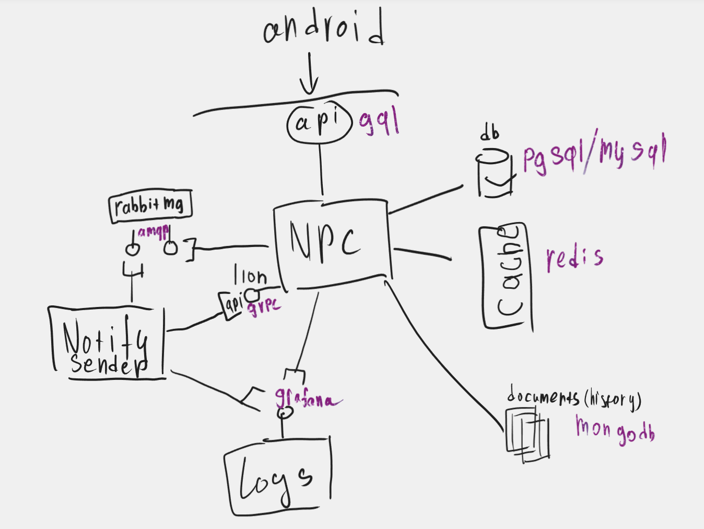
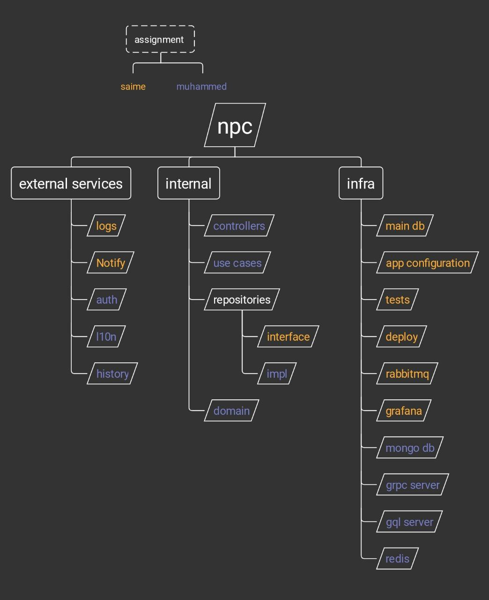

Компоненты v2
⚠️ 27 марта 2025: Документ больше не ведется

Компоненты v1

android - мобильное приложенение на kotlin, код лежит в общем репозитории npc
api(gql) - graphql api для мобильного клиента, предоставляемое приложением NPC
NPC - golang приложение, сервер с двумя эндпоинтами, api - для мобильного клиента и l10n - для использования локализации в других сервисах
l10n (grpc) - grpc api для локализации, это внутренний компонет NPC, к которому предоставляется доступ для внешних сервисов, по средствам grpc
rabbitmq (amqp) - брокер сообщений, в который NPC будет помещать задачи на рассылку push-уведомлений, а сервис notify рассылать
notify sender - сервис рассылки push-уведомлений
logs (grpc) - grpc api для записи в
logs (grafana loki) - сервис для просмотра и управления логами. В приложениях же логирование будет с помощью slog
db (pgsql/mysql) - основная база данных для npc, будут храниться как данные предметной области, так локализация и другие необходимые данные
cache (redis) - кэш для хранения активных сессий, rate-limit, черновых записей(сообщение для отправки например) и других данных, которые хранятся не долго и потерять их не страшно
documents (mongodb) - хранилище истории действий пользователей
Зоны ответственности
⚠️ 27 марта 2025: Документ больше не ведется

NPC - главный компонент с бизнес логикой, можно сказать core
external services - подкомпоненты (составляющие), которые могут представлять из себя:
- независимый golang пакет или модуль (в отдельном или том же репозитории);
- связку: service <-> api <-> adapter(в виде пункта выше);
internal - основные слои реализующие логику
infra - обвязка приложения
logs (service-api-adapter) - логирование в приложении из npc с slog, и отправка логов в grafana loki для мониторинга.
notify (service-api-adapter) - отправка пуш уведомлений из npc с помощью amqp, и обработка задач независимым сервисом.
auth - аутентификация пользователей с помощью access(или jwt) и refresh токенов, управление активными сессиями.
l10n - локализация строк, ошибок. В npc реализовать с помощью независимого пакета, который хранит локализацию в БД.
history - история действий пользователей (вошел\вышел\добавил\удалил\изменил\кикнул\перенес), тех операций которые не фиксируются в БД(напр. сообщения).
controllers - api эндпоинты - gql\grpc обработчики, внутри будут вызываться usecases.
usecases - функции или методы, выполняющие одно логическое действие(удалить роль, создать чат, отправить приглашение в чат, и т.п).
repositories - функции или методы, выполняющие один или несколько запросов в БД, для получения или изменения данных.
domain - модели (структуры).
main db - основная БД и её схема, миграции, конфигурация, подключение в коде.
app configuration - способ получения конфигурации приложением.
tests - написание тестов для реализации функционала (TDD).
deploy - настройка отправки кода на сервер и обновления работающего приложения.
rabbitmq - настройка amqp и подключение к нему в коде.
grafana - настройка логировния через grafana и подключение к ней в коде.
mongo db - настройка mongo и подключение к нему в коде.
grpc server - protobuf схема и генерация кода по ней.
gql server - graphql схема и генерация кода по ней.
redis - настройка redis и подключение к нему в коде.
Последовательность реализации
⚠️ 27 марта 2025: Документ больше не ведется
Подготовка
Посмотреть существующий ui
Вспомнить что хотим изменить
Набросать примерные модели данных с учетом изменений
Набросать примерный api с учетом изменений
Сделать правки в ui с учетом изменений
Составить требования на основе ui, модели данных, api
Описать пробную gql схему, попытаться реализовать требования
Раздел 1
Описать usecases в коде
Описать модели в коде
Описать репозитории в коде
Написать тесты согласно требованиям
Раздел 2
Написать схему главной БД
Выбрать инструменты для возможности применять миграции к БД
Предоставить инструкцию по подключению к БД
Предоставить инструкцию по миграции БД
Раздел 3
Выбрать способ конфигурации приложения
Реализация конфигурации в коде
Предоставить инстркцию по дополнению конфигурации
Предоставить инструкцию по конфигуации сервера
Раздел 4
Выбрать способ логирования об ошибках, варнингах, информационных сообщениях …
Настроить графану локи
Предоставить инструкцию по логированю
Раздел 5
Выбрать способ реализация l10n
Реализовать l10n
Написать grpc схему для l10n api
Реализация grpc контроллера для l10n
Предоставить инструкцию по использованию l10n
Предоставить инструкцию по использованию l10n api
Раздел 6
Сгенерировать код npc api по ранее описанной gql схеме
Реализовать обработчики npc api
Предоставить инструкцию по подключению к graphql playground (npc api)
Раздел 7
Описать методы history
Настроить mongodb
Реализовать history
Предоставить инструкцию по использованию history
Раздел 8
Выбрать способ аутентификации пользователей
Настроить redis
Реализовать аутентификацию
Предоставить инструкцию по аутентификации
Раздел 9
Описать методы notify sender
Настроить rabbitmq
Реализовать notify sender
Предостаавить инструкцию по использованию notify sender
Раздел 10
Выборать способ отправки и обновления приложения на сервере
Реализовать деплой
Предоставить инструкцию по деплю